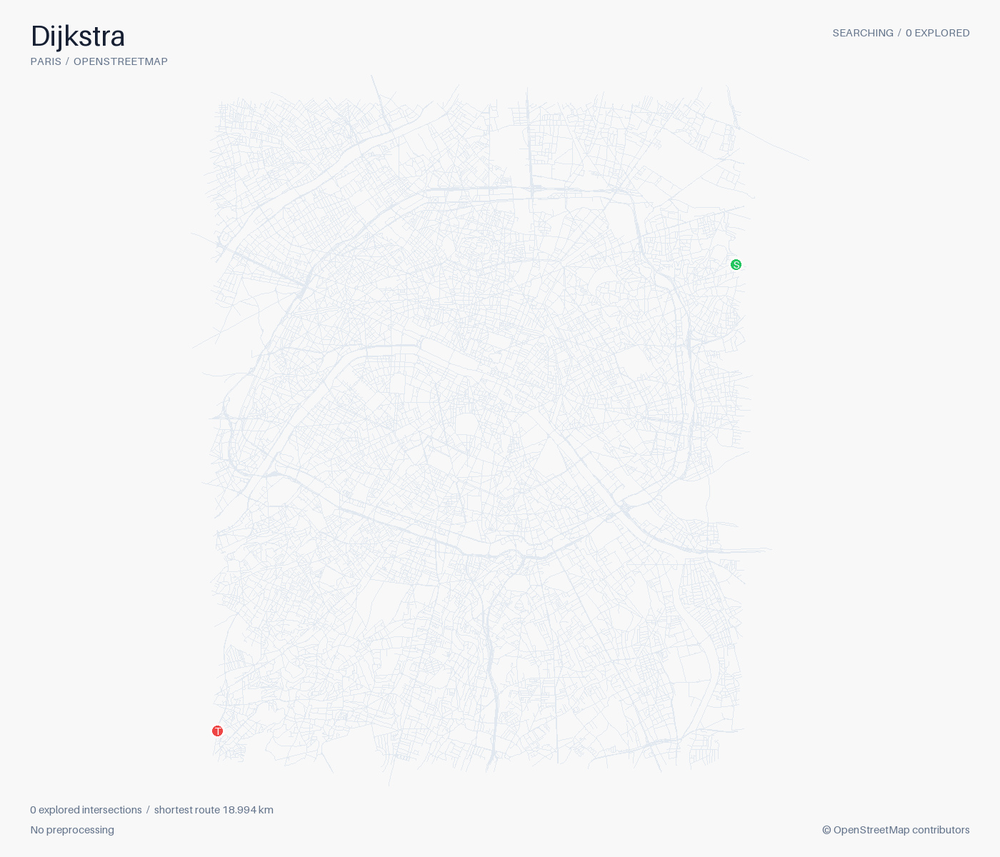
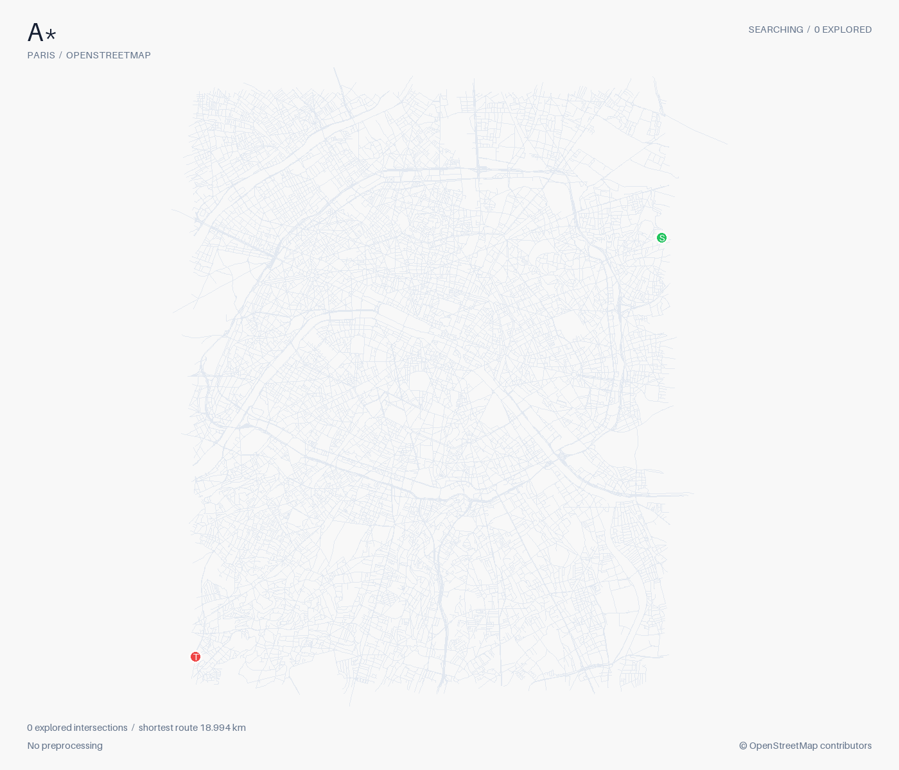
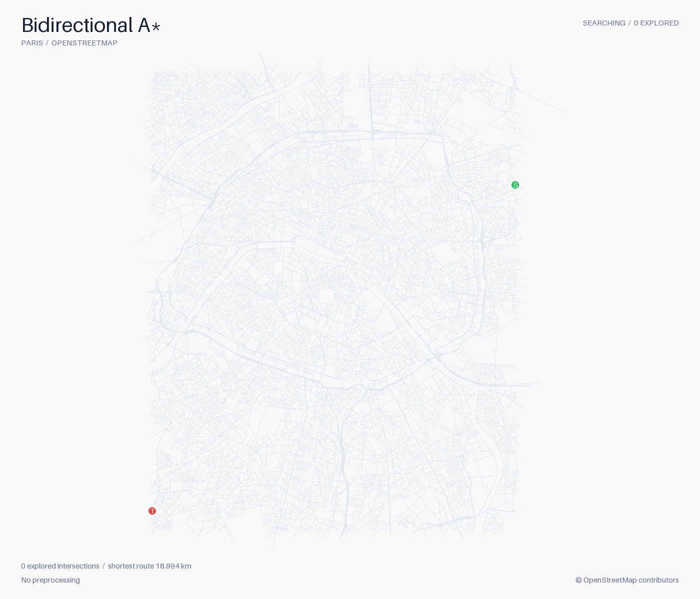
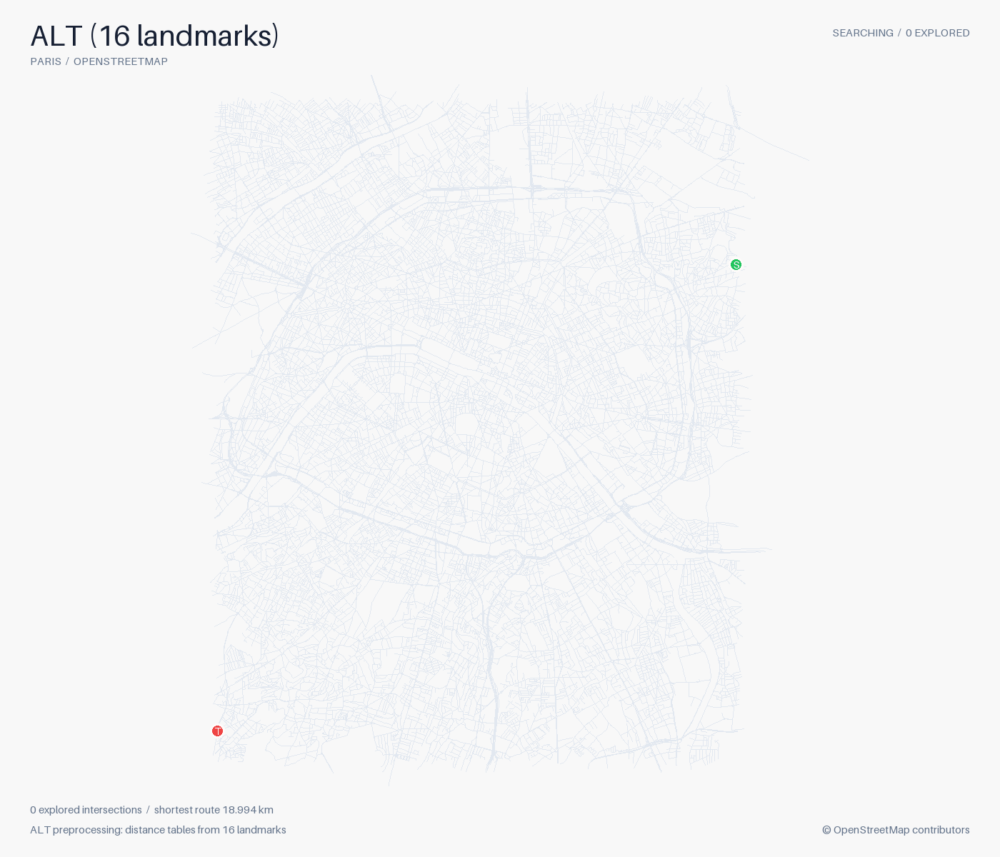
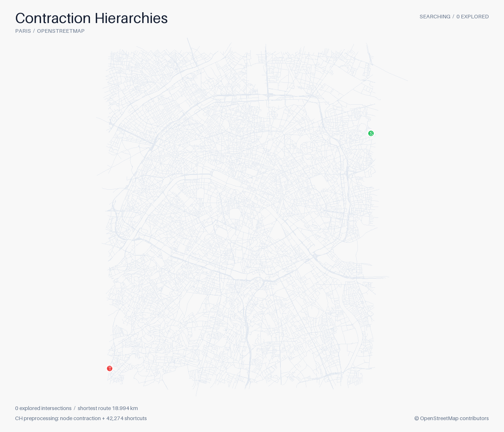
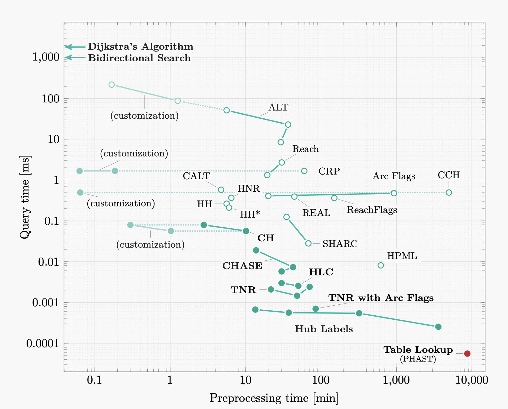
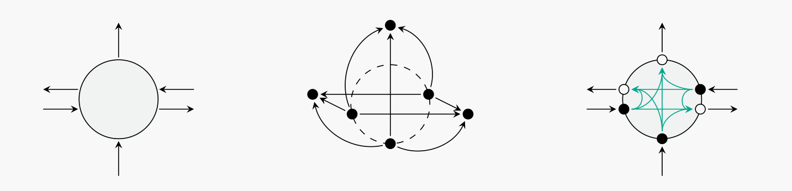

November 4, 2026
Challenges in calculating ETA at scale
why Uber calls ETA the billion-dollar problem?
In this post, I’ll be talking about calculating estimated time of arrivals (ETA). I’ll first explain why this is an important problem across various domains. Then explore different approaches to calculating ETA and elaborate on where they fall short. I hope by the end of it you get a little insight into the challenges involved. It’s always nice to dive deep into a problem to understand all the nitty gritty details that goes into building real-world systems.
Uber called ETA a billion dollar problem. From an outsider point of view ETA should just effect user experience, but there’s a lot more to it.
For starters, user experience is important! Consider the following scenario: if a ride hailing company always underestimates the ETA, people will eventually stop trusting the numbers. As a side effect, they may cancel the ride, simply because they suspect it takes the driver a longer time to pick up the passenger than what’s shown on the app. Less rides, less cash flow.
But user experience is just the beginning. In order to assign drivers to passengers, ride hailing companies are faced with a matching problem: How to match a passenger to a driver? To solve this optimization problem, we need an objective function. The goal could be decreasing wait time for passengers and helping drivers secure more rides. For that, we need to know the time it takes for each driver to reach a passenger.
This is why Uber calls ETA the billion dollar problem, but ETA is not limited to ride-hailing. Many problems in logistics are directly related to ETA. For instance consider a food or post delivery service. In this scenario, we are concerned with finding the optimal routes for a fleet of vehicles serving customers, subject to some constraints like time windows and vehicle capacity. we need to know which vehicle to assign to which deliveries and in what order stops should be made. Similar to ride-hailing’s matching problem, we wanna minimize customers wait time, and maximize the number of deliveries. To solve this optimization problem, we need the ETA again.
How ETA is calculated?
If you studied computer science, at some point in your curriculum you read about shortest path algorithms like Dijkstra. Dijkstra can be used to calculate the ETA, but it’s gonna be extremely slow, and not gonna scale to a road network with million of nodes and edges. Dijkstra expands outward from the source in every direction, like a growing circle, until it reaches the destination. Just look at the search space explored by Dijkstra:

A* can significantly restrict Dijkstra’s search space by adding a heuristic, an estimate of the remaining cost from the current node to the destination. Still, it’s gonna be super slow in real-world road networks.

Another thing that could be done to make things faster is to search backwards from the destinations, while searching forward from the source at the same time. It’s a very simple idea, but it can improve the response time significantly:

There are other algorithms, that do some preprocessing to build an even more restrictive heuristic for A, like ALT (A, landmarks and triangle inequality). ALT chooses a number of landmarks, and calculates the ETA from, and to, the landmarks for each node in the graph. Then, from the triangle inequality, we know that the time it takes to get from any node to destination is less than the time it takes to get from that node to any landmark and from the landmark to the destination. This more restrictive heuristic can drastically change A* performance:

We can still do better by doing more preprocessing. Contraction Hierarchies is an algorithms that takes the idea of preprocessing one step further. Conceptually, it takes the hierarchical structure of route networks into account, and ranks each node, while adding some shortcuts. During query time, it only allows the hops to the nodes higher in the hierarchy, which significantly reduces the search space. Think about it this way: when we are headed to a destination, we first try to get on the highway, drive all the way near the destination and then get off the high way. To understand how correctness is ensured and the low-level details of how this works, you can follow this awesome page, but visually this is how it’s gonna look like:

Preprocess vs Query time Trade-off
By now you might have realized that the more we preprocess the less the query time will be. At one extreme, we can compute all the shortest path pairs and save them, so that during the query we will only have to do a table lookup! On the other hand Dijkstra has no preprocessing step.

Image from Route Planning in Transportation Networks — Delling, Goldberg, Pajor & Werneck.So what’s the trade-off here? Can’t we just do preprocessing once in the beginning and be done with it? The problem is that road networks are changing all the time. We calculated the visualization using a static snapshot of Openstreetmaps data, but in reality roads become congested and traffic fluctuates in road segments. Ideally, our algorithm should adapt to these changes in the network. However, algorithms that take advantage of preprocessing must reprocess the graph, which can sometimes take some time. Based on the diagram above, it takes 10 minutes for CH preprocessing step to finish, and in the meantime, new changes can happen in the road network! In contrast, Dijkstra is highly flexible, and can adapt to changes in the road network quite easily!
More challenges
There are some nuances that we didn’t take into consideration. Lets say we wanna calculate the shortest path between two points that are far away by hours. When we start our journey, we might know that a particular road currently allows us to drive at 100 km/h. But by the time we actually reach that road, an hour or two later, traffic conditions might have changed. Maybe there’s congestion, or maybe traffic has cleared up. In other words, we need to be able to look into future/historical speeds for the time slice other than the current timestamp.
Another problem is with turn restrictions. It’s not always allowed to take a right/left/U-turn, and it’s not easy to represent this in normal graphs where nodes are intersections and edges connect nodes. To do that we need an edge-based graph, where nodes represent streets and edge represent turns, and all the shortest path algorithms we studied so far must be adjusted.

Image from Customizable Contraction Hierarchies with Turn Costs — Buchhold, Wagner, Zeitz & Zündorf.So far, we just looked at calculating a single ETA, but many use cases need a batch of ETAs, for example calculating ETAs from all the passengers to all the drivers in an area. This is obviously more computationally demanding, and requires algorithms that are faster than simply calculating ETA for each source and destination one step at a time.
Summary. In this post we looked at some of the challenges in calculating ETAs. There is a natural trade-off between preprocessing vs query time as well as preprocessing vs flexibility: turn restrictions, live updates, time dependency. Dealing with all these challenges on road networks with millions of nodes and edges is not trivial, but the good news is that most of the challenges introduced in this post have been extensively studied. My point was to show how a seemingly simple problem can be pretty involved under the hood.